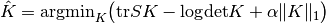
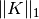
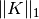

2.6. 协方差估计 (Covariance estimation)¶
许多的统计学问题在某种程度上都需要估计总体的协方差矩阵，即估计样本数据集散点图的形状。大多数情况下，样本数据的性质（样本大小，结构特性，均一性等）会对估计质量产生非常大的影响。因此， sklearn.covariance 包提供了一个能在不同数据条件下对总体的协方差矩阵进行精确估计的工具。
我们假定，数据集中的所有观测样本都服从独立同分布 (independent and identically distributed, i.i.d.)。
2.6.1. 经验协方差 (Empirical covariance)¶
在观测样本数相对于数据特征数（用来描述单个样本属性的变量的个数）足够多的情况下，我们可以用经典方法 最大似然估计 （Maximum likelihood estimator, 或者称为 经验协方差 ）来很好地估计数据集的协方差矩阵。具体来说，样本的最大似然估计是对应的总体的协方差矩阵的一个无偏估计。
在 sklearn.covariance 包中，用 empirical_covariance 函数进行计算，或者，用 EmpiricalCovariance.fit 方法把 EmpiricalCovariance 对象和数据样本进行拟合。需要小心的是，当样本数据处于中心或者不处于中心时，得到的结果将不同。这就需要准确设置 assume_centered 参数。精确来说，如果设置 assume_centered=False ，测试集的均值向量应当与训练集的相等；反之，应设置 assume_centered=Ture 并且指定测试集和训练集的中心。
2.6.2. 缩减协方差 (Shrunk Covariance)¶
2.6.2.1. 基本缩减¶
最大似然估计 尽管是一个无偏估计，但就求协方差矩阵的特征值来说它并不是一个好的估计。因为根据它的逆矩阵求得的精度矩阵并不精确。由于数值求解的困难，经验协方差矩阵有时甚至不可求逆。 为了解决矩阵求逆问题，这里引入了一个经验协方差矩阵的变换：缩减 (shrinkage)。
在scikit-learn中，变换（用户指定缩减系数）可以通过 shrunk_covariance 方法直接应用到未计算的协方差中。同样，协方差的缩减估计可以通过 ShrunkCovariance 对象和 ShrunkCovariance.fit 方法进行拟合；由于样本数据处于中心或者不处于中心，结果将不同，我们需要准确设置 assume_centered 参数。
数学上，缩减目的在于减少经验协方差矩阵最小特征值和最大特征值的比值。这可以通过对特征值进行定量的偏移来实现，等效于求协方差矩阵的L2-penalized最大似然估计。实际应用时，缩减归结为一个简单的凸转换：  。
。
设置缩减系数  等同于设置偏差/方差的均衡，详细讨论参见样例。
等同于设置偏差/方差的均衡，详细讨论参见样例。
2.6.2.2. Ledoit-Wolf缩减¶
- Ledoit和M. Wolf在他们2004的论文[1]中提出了一个用来计算最优缩减系数 的公式，用来最小化估计协方差矩阵和真实协方差矩阵之间的均方差。
Ledoit-Wolf协方差估计可以通过 sklearn.covariance 包中的 ledoit_wolf 函数得到，或者，通过 LedoitWolf 对象拟合同一组样本。
样例:
- 参见 Shrinkage covariance estimation: LedoitWolf vs OAS and max-likelihood：如何根据数据拟合
LedoitWolf对象，并就似然性展示Ledoit-Wolf估计的性能。
- [1] O. Ledoit and M. Wolf, “A Well-Conditioned Estimator for Large-Dimensional
- Covariance Matrices”, Journal of Multivariate Analysis, Volume 88, Issue 2, February 2004, pages 365-411.
2.6.2.3. Oracle近似缩减 (Oracle Approximating Shrinkage, OAS)¶
在假定数据服从高斯正态分布条件下，Chen等推导了一个公式来确定缩减系数，其产生均方差小于O. Ledoit和M. Wolf的公式。这个估计被称作协方差的Oracle近似缩减 (Oracle Approximating Shrinkage, OAS)估计。
协方差矩阵的OAS估计可以通过 sklearn.covariance 包中的 oas 函数进行计算，或者，通过 OAS 对象拟合同一组样本。
比较Ledoit-Wolf和OAS 估计设置缩减值时偏差-方差的均衡
- [2] Chen et al., “Shrinkage Algorithms for MMSE Covariance Estimation”,
- IEEE Trans. on Sign. Proc., Volume 58, Issue 10, October 2010.
样例:
- 参见 Shrinkage covariance estimation: LedoitWolf vs OAS and max-likelihood：如何根据数据拟合出
OAS对象。 - 参见 Ledoit-Wolf vs OAS estimation：如何可视化根据
LedoitWolf和OAS协方差估计得到均方差的差异。
2.6.3. 稀疏逆协方差 (Sparse inverse covariance)¶
协方差矩阵的逆矩阵（也被称为精度矩阵）与偏相关矩阵成比例。它描述数据之间的偏独立关系。换句话说，如果两个特征对于其他特征是有条件地独立，那么，精度矩阵中相应的系数为零。这就是我们需要估计稀疏精度矩阵的原因：通过从数据中学习独立性关系，协方差矩阵的估计能被更好地处理。这个过程也被称为 协方差选择。
在小样本情况下，即当 n_samples 的级数等于或小于 n_features 时，稀疏逆协方差估计倾向于得到比缩减协方差估计更好的结果。但是，在大样本情况下，或者在数据相关性较强的情况下，稀疏估计能恢复矩阵的非对角结构。
GraphLasso 估计用L1-penalty将稀疏性加到精度矩阵中： alpha 参数越大，精度矩阵越稀疏。对应的 GraphLassoCV 对象用交叉验证来自动地设置 alpha 参数。
在小样本情况下，最大似然估计，缩减估计和稀疏估计的协方差及精度矩阵的比较。
Note
结构恢复
从数据的相关性中恢复一个可视化结构是一件困难的事情。如果您对恢复感兴趣，那么必须牢记：
- 从相关矩阵中恢复比从协方差矩阵中容易：在运行
GraphLasso前对观测样本进行标准化。 - 如果潜在的可视化图形中的节点拥有的连接数比普通节点多，那么，这个算法将会漏掉一部分连接。
- 如果你的观测样本数相比于潜在的可视化图形中边的数量不够大，那么你将不能恢复它。
- 即便恢复条件较好，通过交叉验证得到的
alpha参数（例如，使用GraphLassoCV对象）会导致选择太多的边。但是，相关边的权重会大于非相关边。
数学公式如下：

其中，  是需要估计的精度矩阵，
是需要估计的精度矩阵，  是样本的协方差矩阵，  是 非对角系数绝对值的和。用来求解这个问题的是Friedman 2008 Biostatistics论文中的GLasso算法。此算法与R
是样本的协方差矩阵，  是 非对角系数绝对值的和。用来求解这个问题的是Friedman 2008 Biostatistics论文中的GLasso算法。此算法与R glasso 包中的算法相同。
样例:
- Sparse inverse covariance estimation：人工数据，用来展示一个结构的部分修复，并与其他协方差估计进行比较。
- Visualizing the stock market structure ：实际股票市场数据，寻找那些符号最相关。
参考文献：
- Friedman et al, “Sparse inverse covariance estimation with the graphical lasso”, Biostatistics 9, pp 432, 2008
2.6.4. 鲁棒的协方差估计 (Robust Covariance Estimation)¶
实际数据集通常受到测量误差和记录误差的影响。由于各种不同的原因，常规但不寻常的观测值也会出现。非常不寻常的观测值被称为异常值。
上文讨论的经验协方差估计和缩减协方差估计对数据中的异常观测值非常敏感。因此，我们需要使用鲁棒的协方差估计来估算实际数据集的协方差。另外，鲁棒的协方差估计也可用来探测异常值，和根据数据的进一步处理结果剔除/降低一些观测值。
在 sklearn.covariance 包中，我们应用了一个鲁棒的协方差估计，即最小协方差行列式 [3]。
2.6.4.1. 最小协方差行列式 (Minimum Covariance Determinant)¶
最小协方差行列式估计是一个鲁棒的数据集协方差估计，是由P.J. Rousseeuw在[3]中提出。基本思想是选取一定百分比 (h) 的“好”观测值（即非异常值），并计算其经验协方差矩阵。紧接着，对这个协方差矩阵进行缩放来补偿选取过程（“一致性步骤”）。在计算了最小协方差行列式估计后，我们可以根据Mahalanobis距离来对观测值施加权重，最终得到一个重新加权了的协方差估计值（“重新加权步骤”）。
Rousseeuw和Van Driessen [4] 开发了FastMCD算法来计算最小协方差行列式。Scikit-learn中使用这个算法来对数据集拟合MCD对象。FastMCD算法同时也计算了一个数据集位置的鲁棒估计。
原始估计可以通过 MinCovDet 鲁棒的协方差估计对象中的 raw_location_ 属性和 raw_covariance_ 属性进行访问。
- [3] P. J. Rousseeuw. Least median of squares regression.
- Am Stat Ass, 79:871, 1984.
- [4] A Fast Algorithm for the Minimum Covariance Determinant Estimator,
- 1999, American Statistical Association and the American Society for Quality, TECHNOMETRICS.
样例：
- 参见 Robust vs Empirical covariance estimate：如何根据数据集来拟合
MinCovDet对象，并可以发现，尽管存在异常值，估计仍然保持了一定的精度。 - 参见 Robust covariance estimation and Mahalanobis distances relevance：比较。
EmpiricalCovariance和MinCovDet协方差估计的Mahalanobis距离的不同（也可以得到精度矩阵的更好的估计）。
| 异常值对位置和协方差估计的影响 | 使用Mahalanobis距离从异常值中分离出正常值 |
|---|---|
 |
 |